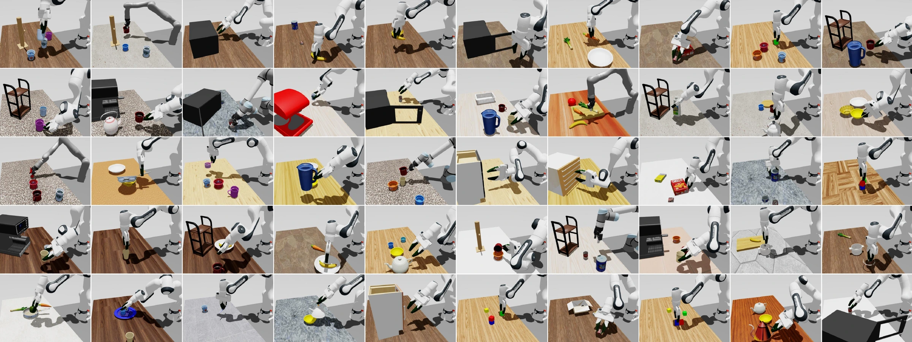

Understand the task
A language description is used to construct a simulated scene and extract task-relevant affordance queries.
National Key Laboratory of Human-Machine Hybrid Augmented Intelligence
Institute of Artificial Intelligence and Robotics, Xi’an Jiaotong University

From task descriptions to affordance-aware data, benchmark evaluation, and real-world transfer.
THE PAPER
Many everyday robot manipulation skills are affordance-dependent, with success determined by whether the robot contacts the functional object region required by the subsequent action. Current simulation data generators obtain contacts from generic grasp estimators or per-object manual contact annotations, but generic estimators rank stable grasps without task semantics and often select contacts that are misaligned with the downstream action, while manual contact annotations must be rewritten for each new object and task.
To address these challenges, we introduce AffordSim, a scalable data generator and benchmark that integrates open-vocabulary 3D affordance prediction into simulation-based trajectory generation. Given a natural-language task description, AffordSim synthesizes a task-relevant scene, emits affordance queries, grounds them on object surfaces, samples region-conditioned grasps, and selects executable candidates with motion planning. It further randomizes object pose, texture, lighting, image noise, and cross-viewpoint backgrounds for sim-to-real transfer.
We instantiate AffordSim as a 50-task benchmark across diverse manipulation skills, five robot embodiments, and 500+ rigid and articulated objects. AffordSim achieves 93% of the trajectory collection success rate of manual contact annotations on affordance-critical tasks and 89% on hard composite tasks. Vision-language-action policies trained on AffordSim data transfer zero-shot to a real Franka FR3, reaching 24% average success.
01 / THE IDEA
The right grasp is more than a stable grasp. It must also support what the robot needs to do next.
AffordSim brings open-vocabulary 3D affordance prediction into simulation-based data generation. From a natural-language task, it builds a scene, identifies task-relevant object regions, and plans executable grasps and trajectories. The resulting data supports policy learning on a benchmark designed around affordance-dependent manipulation.
02 / THE FRAMEWORK
AffordSim connects scene generation, 3D affordance grounding, grasp selection, and motion planning in one data-generation pipeline.
A language description is used to construct a simulated scene and extract task-relevant affordance queries.
Open-vocabulary 3D affordance prediction identifies object regions relevant to the intended action.
Region-conditioned grasps and motion planning produce executable demonstrations for policy learning.

03 / THE BENCHMARK
Fifty tasks span seven manipulation skills, from picking and placing to longer compositions that require a sequence of functional interactions.

04 / MULTI-EMBODIMENT
Tasks can be executed across five robot embodiments, enabling the same affordance-aware benchmark to be studied across different arms.

05 / DOMAIN RANDOMIZATION
To support transfer, AffordSim varies object pose, texture, lighting, image noise, and cross-viewpoint backgrounds reconstructed from real scenes.

06 / SIM-TO-REAL
As an initial transfer evaluation, policies trained on AffordSim demonstrations are deployed zero-shot on a real Franka FR3 across four manipulation tasks.


24% average zero-shot success across the four real-world tasks for vision-language-action policies trained on AffordSim data. See the paper for the experimental setup and per-task results.
CITATION
If you find AffordSim useful, please consider citing our work. The BibTeX entry is provisional.
Read the paper@misc{li2026affordsim,
title = {AffordSim: A Scalable Data Generator and Benchmark
for Affordance-Aware Robotic Manipulation},
author = {Li, Mingyang and Xu, Haofan and Sun, Haowen and
Chen, Xinzhe and Ren, Sihua and Huang, Liqi and
Sui, Xinyang and Miao, Chenyang and Ye, Jiawei and
Cui, Qiongjie and Chen, Xingyu and Liu, Zeyang and
Lan, Xuguang},
year = {2026}
}